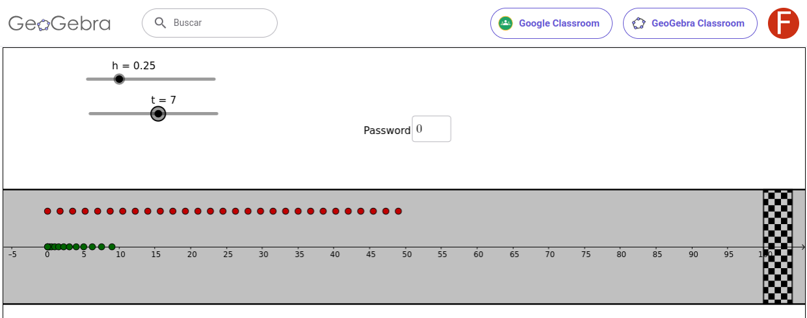

Unidad 2:#
Modelos cuadráticos y variación.
Problema 6. [Carrera]( )#
)#
Este problema es para investigar a partir de una applet de GeoGebra que pueden encontrar en este enlace (clic acá) y su consigna es exactamente la misma que la del Problema 1, porque es el tipo de abordaje de los problemas que nos acostumbraremos a hacer en esta materia.

a) Jueguen un poco con la applet y escriban un breve texto que explique en qué consiste. El texto debería servir para que alguien que no haya visto la applet entienda de qué se trata.
b) Redaccten dos o tres preguntas que se podrían investigar a partir de la applet. Estas preguntas serán compartidas en la clase y se discutirá las posibilidades y procedimientos convenientes para intentar responderlas.
Problema 7.[Tiro vertical]#
Una bolita de vidrio es lanzada hacía arriba desde \( 1\ m \) de altura y con una velocidad de \( 15 \frac{m}{s} \). Si la variable \( t \) representa el tiempo (medidop en segundos), la altura (en metros) a la que estará la bolita en cada instante viene dada por la fórmula:
\( f(t) = -5t^2 + 15t + 1 \)
a) ¿A qué altura del piso estará la bolita \( 0,5\ s\) después de ser lanzada?
b) ¿A qué altura estará \( 2 s \) después de ser lanzada?
c) ¿Se puede asegurar que la bolita estuvo aascendiendo durante los primeros dos segundos desde que fue lanzada?
d) Observen que, para esta función, es \( f(0) = 1 \). ¿Qué significa esta información en el contexto del problema?
e) Observen que \( f(3) = 1 \) y \( f(4) = -19 \) ¿Qué significan estos valores en el contexto del problema?
f) ¿Cuánto tarda la bolita en llegar al piso?
g) La velocidad media de la bolita entre un instante \( t_0 \) y un instante \( t_1 \) es la relación que hay entre la distancia recorrida por labolita entre esos dos instantes y el tiempo \( t_1 -t_0 \) que le llevó recorrer esa distancia. Es decir:
| $$\text{Velocidad media} = V_M = \frac{ \text{Distancia recorrida} }{ \text{Tiempo empleado} } = \frac{ f(t_1) - f(t_1) }{ t_1 - t_0 }$$ |
Problema 8. [Velocidad media]()#
Supongamos que \( k \) es algún número positivo. Si \( f : [0, k] \to \mathbb{R}/f(t) = at^2 + bt + c \) da la posición en función del tiempo para un móvil.
a) Construyan una applet de GeoGebra donde:
\( k, a, b \) y \( c \) sean deslizadores.
Haya otros dos deslizadores \( t_0 \) y \( t_1 \).
Haya dos puntos que se mueven sobre el gráfico de \( f \) y que corresponden la posición del móvil en os instantes \( t_0 \) y \( t_1 \).
Haya en la pantalla un cartel que dice: La velocidad media entre los instantes \( t_0 \) y \( t_1 \) es …, de manera que el \( t_0 \) y el \( t_1 \) vayan cambiando en el cartel cuando el usuario mueve los deslizadores y aparezca en el cartel el cálculo de la velocidad media para esos valores de \( t_0 \) y \( t_1 \).
b) Si \( t \) es un instante de tiempo y \( h \) es un instante de tiempo muy chico, entonces \( t + h \) representa “un ratito después del instante \( t \)“. Hagan una segunda versión de la applet anterior que permita calcular y mostrar la velocidad media en intervalos de tiempo breves que van desde \( t \) hasta \( t + h \).
c) Utilicen cualquiera de las dos applets para modificar los valores de \( a, b \) y \( c \) y determinar intervalos de tiempo en los que se pueda decir que:
La velocidad media es positiva y cada vez mayor.
La velocidad media es positiva y cada vez menor.
La velocidad media es \( 0 \).
Problema 9. [Velocidad instantánea]#
Queremos estudiar como se podría definir en función del tiempo, la velocidad de un móvill como los que venimos viendo en problemas anteriores. Para eso vamos a calcular la velocidad media en distintos intervalos de su recorrido.
Consideren la función posición \( f : [0, 10] \to \mathbb{R}/f(t) = t^2 \)
a) Partan el dominio de la función en \( 40\ intervalos \) de tiempo iguales: 0.0, 0.25, 0.5, 0.75, 1.0, 1.25, 1.5, 1.75, 2.0, …, 9.5, 9.75, 10,0 Calculen la velocidad media en cada uno de esos intervalos, con esta estrategia: organisense en el grupo de toda la clase para que cada uno calcule una velocidad media distinta y luego reúnan toda la información en una tabla, para construir un gráfico.
b) ¿Cómo se podría usar una computadora para sistematizar esta tarea?
Problema 10. [Varias velocidades]#
Cada una de las siguientes funciones describe la posición de un automóvil en función del tiempo y se pueden considerar casos especiales de los que pueden representarse con la applet del Problema 8. Considérenlas para \( t \ge 0 \).
\( f_{1}(t) = t^2 + 6t \)
\( f_{2}(t) = t^2 + 15t \)
\( f_{3}(t) = t^2 + 3t \)
\( f_{4}(t) = 3t^2 \)
\( f_{5}(t) = \frac{1}{3}t^2 \)
Deduzcan en cada caso la función que da la velocidad de automóvil en cada instante \( t \). Pueden graficarla con los recursos del Problema 9.
Problema 11. [Recta tangente]#
Lean el siguiente recuadro:
Recta tangente:
La derivada de una función $ f $ en un punto $ x_0 $ de su dominio 8en el que $ f $ es derivable) es la pendiente de la recta tangente al gráfico de $ f $ en el punto $ \left(x_0, f(x_0)\right) $. La figura muestra el gráfico de una función $ f $ y su recta tangente en dos puntos distintos.
Esa recta tangente tiene una ecuación del tipo $ y = mx + b $.
Pero, como su pendiente es $ m = f'(x_0) $, la ecuación queda:
| $ y = f'(x_0)x + b $ | (2.1) |
Además, pasa por el punto $ \left( x_0, f(x_0) \right) $. Poniendo esta condición en $ \left(2.1\right) $ se tiene que:
| $ f(x_0) = f'(x_0)x_{0} + b $ |
de donde, despejando $ b $:
| $ b = f(x_0) - f'(x_0)x_{0} $ | (2.2) |
Poniendo esto en $ \left(2.1\right) $, resulta:
| $ y = f'(x_0)x + f(x_0) - f'(x_0)x_{0} $ | (2.3) |
y tomando factor común $ f'(x_0) $ y ordenando, obtenemos, finalmente, la ecuación de la recta tangente al gráfico de $ f $ en el punto $ \left(x_{0},f(x_{0})\right) $:
$ y = f'(x_0)(x-x_0) + f(x_0) $ |
(2.4) |
Consideren la función $ f(x) = \frac{1}{2}x^2 - 2x -1 $.
Esscriban la ecuación de la recta que es tangente al gráfico de \( f \) en el punto \( \left(4, 1 \right) \).
Lo mismo que en el ítem anterior, pero en el punto \( \left(0, 1\right) \).
(
) Grafiquen en GeoGebra \( f \) y las dos rectas halladas para verificar la tangencia.
Problema 12. [Ecuaciones de cinemática]#
Lean el siguiente recuadro:
Cuando en Física se estudia el movimiento de un cuerpo que tiene aceleración constante, se define esa aceleración como la variacción de la velocidad en relacción al tiempo. Dadas una velocidad $ v $ en un instante $ t_0 $ y en un instante posterior $ t $, esa variación se calcula como:
| $ a = \frac{ v(t) - v(t_0 }{ t - t_0 } $ | (2.5) |
Si, para simplificar las expresiones, consideramos que el instante inicial es $ t_0 = 0 $, la ecuación $ \left(2.5\right) $ queda:
| $ a = \frac{ v(t) - v(t_0) }{ t } $ | (2.6) |
de donde resulta, despejando:
| $ v(t) = at + v(0) $ | (2.7) |
Sabiendo que la velocidad $ v(t) $ es la derivada de la posición $ x(t) $, ¿cómo tiene que ser la fórmula de la posición en función del tiempo?
Problema 13. [Problemas tomados de la guía de Física I]#
El objetivo de incluir aquí estos problemas es contribuir a que puedan aprecciar el diálogo que hay entre la Matemática y la Física. Los problemas de modelizar el movimiento de un cuerpo dieron históricamente motivación para el desarrollo de buena parte de lo que hoy llamamos Cálculo Diferencial. Hay quien elige aprender Matemática para luego entender los temas de Física y hay quien prefiere apoyarse en los contextos físicos para motivar la comprensión de la matemática. Cada uno debe encontrar su camino (y luego recorrerlo con MRU o MRUV).
a) La posición de un auto de carrera se observó en varios momentos; los resultados se resumen en la tabla siguiente:
| $ t[s] $ | 0.0 | 1.0 | 2.0 | 3.0 | 4.0 | 5.0 |
| $ x[m] $ | 0.0 | 2.3 | 9.2 | 20.7 | 36.8 | 57.5 |
Encuentren la velocidad promedio del auto para:
(i) El primer intervalo de tiempo de \( 1\ s \).
(ii) Los últimos \( 3\ s \).
(iii) Todo el período de observación.
b) Un auto va por una ruta a una velocidad constante de \( 60\ \frac{km}{h} \). Al ver un semáforo en rojo aplica el freno y se detiene en \( 10\ s \). Permanece parado durante \( 30\ s \) y vuelve a arrancar tardando \( 20\ s \) en llegar a misma velocidad a la que venía. Fijen un sistema de coordenadas y contesten:
(i) ¿Cuál es su aceleración antes de ver el semáforo?.
(ii) ¿Cuál es su acceleración en el momento que está frenando?.
(iii) ¿Cuál es su acceleración entre que arranca y alcanza la misma velocidad?.
(iv) Realicen gráficos de la aceleración y la distanciaa recorrida hasta detenerse.
Problema 14. [Problemas de un trazo. Función cuadrática]()#
C1. Dados tres puntos no alineados y con disstintas abscisas, escribir una fórmula de la función cuadrática que pasa por ellos.
C2. Dados dos puntos, escribir la fórmula de todas las funciones cuadráticas que pasan por ellos.
C3. La fórmula de una función cuadrática se puede escribir como:
(i) \( f(x) = ax^2 + bx + c \)
(ii) \( f(x) = a(x - p)^2 + q \)
(iii) \( f(x) = a(x - x_0)(x - x_1) \)
Siempre con \( a \neq 0 \) Dada una función cuadrática expresada de cualquiera de las formas (i), (ii), (iii), manipular la expresión algebraica para expresarla de cualquiera de las otras dos formas.
C4. Dada una función cuadrática en cualquiera de las formas (i), (ii) o (iii) y un punto \( P=\left(r,s\right) \) decidir si el punto pertenece o no al gráfico de lla función.
C5. Resolver ecuaciones de las formas:
a) \( ax^2 + bx + c = 0 \)
b) \( a(x - p)^2 + q = 0 \)
c) \( a(x - x_0)(x - x_1) = 0 \)
C6. Dada una función cuadrática en cualquiera de las formas (i), (ii), o (iii) construir la parábola que es su gráfico.
C7. Dada una función cuadrática en cualquiera de las formas (i), (ii) o (iii) identificar el eje de simetría de la parábola (que es su gráfico).
C8. Dada una función cuadrática en cualquiera de las formas (i), (ii) o (iii) identificar el vértice de parábola (que es su gráfico).
C9. Dada una función cuadrática en cualquiera de las formas (i), (ii) o (iii) encontrar pares de puntos \( x_n, x_m \), tales que \( f(x_n) = f(x_m) \).
C10. Dadas dos funciones cuadráticas determinar la intersección de sus gráficas y decidir si se trata de un punto, de dos puntos o de ningún punto.
C11. Dadas una función cuadrática y una lineal determinar la intersección de sus gráficas y decidir si se trata de un punto, de dos puntos o de ningún punto.
Problema 15. [Problemas de un trazo. Función cuadrática y derivada]()#
D1. Dada una función cuadrática en la forma \( f(x) = ax^2 + bx + c \) o \( f(x) = a(x - p)^2 + q \), escribir su derivada.
D2. Dada una función cuadrática en la forma \( f(x) = ax^2 + bx + c \) o \( f(x) = a(x - p)^2 + q \), escribir la ecuación de la recta tangente a su gráfico en un punto \( P=\left(x_0, f(x_0)\right) \).
D3. Dada una función cuadrática en la forma \( f(x) = ax^2 + bx + c \) o \( f(x) = a(x - p)^2 + q \) y un número real \( k \), determinar \( x_0 \) tal que \( f'(x_0) = k \).
D4. Dada una función lineal \( f(x) = mx + b \) encontrar una función cuadrática \( F \) tal que \( F' = f \).
D5. Dada una función lineal \( f(x) = mx + b \) y un punto \( \left(x_0, f(x_0)\right) \), hallar una función cuadrática \( g \) tal que el gráfico de \( f \) sea la recta tangente al gráfico \( g \) en \( \left(x_0, g(x_0)\right) \).
D6. Dada una función cuadrática en la forma \( f(x) = ax^2 + bx + c \) o \( f(x) = a(x - p)^2 + q \), identificar el vértice resolviendo la ecuación \( f'(x) = 0 \).
D7. Dada una función cuadrática en la forma \( f(x) = ax^2 + bx + c \) o \( f(x) = a(x - p)^2 + q \) identificar los intervalos de crecimiento y de decrecimiento resolviendo las inecuaciones \( f'(x) > 0 \) y \( f'(x) < 0 \).